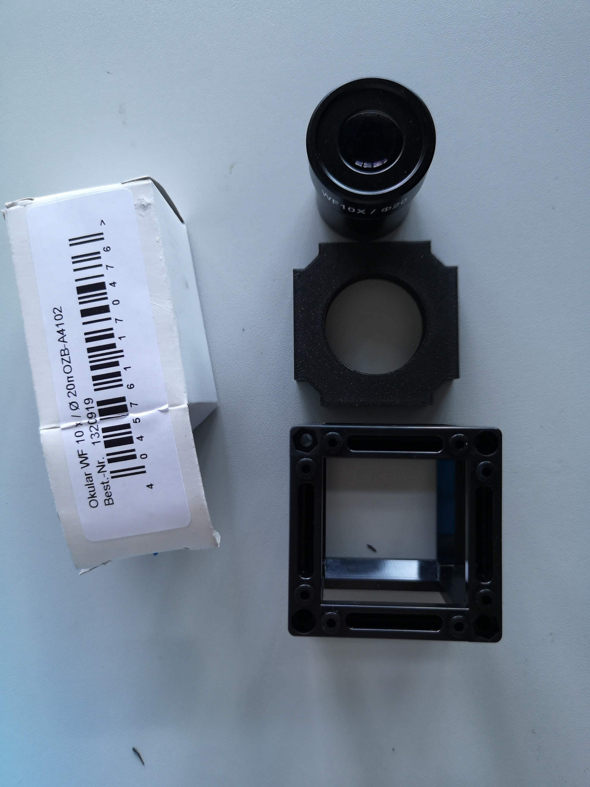
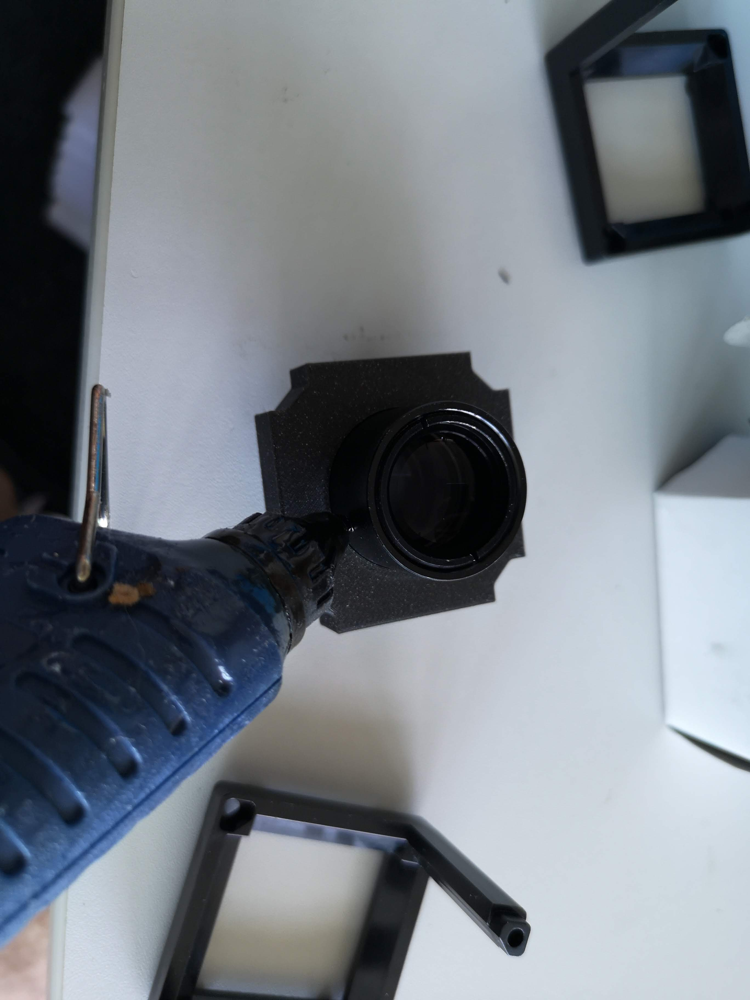
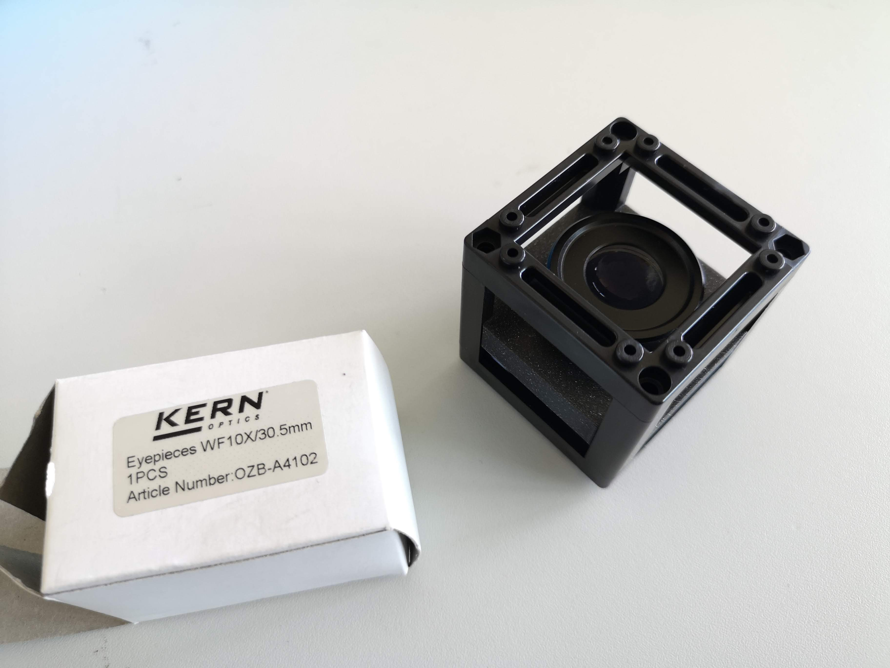

<!DOCTYPE html>
<html lang="en">
  <head>
    <meta charset="utf-8" />
    <meta name="viewport" content="width=device-width, initial-scale=1.0, maximum-scale=1.0, user-scalable=no" />

    <title>reveal-md</title>
    <link rel="shortcut icon" href="./favicon.ico" />
    <link rel="stylesheet" href="./dist/reset.css" />
    <link rel="stylesheet" href="./dist/reveal.css" />
    <link rel="stylesheet" href="./dist/theme/black.css" id="theme" />
    <link rel="stylesheet" href="./css/highlight/base16/zenburn.css" />


  </head>
  <body>
    <div class="reveal">
      <div class="slides"><section  data-markdown><script type="text/template">
#  Eyepiece
Duration: 1

This page describes how to assemble the Eyepiece module. It uses a standard eyepiece with 22mm diameter.
</script></section><section  data-markdown><script type="text/template">## Bill of material

Below you will find all components necessary to build this device

### 3D printing files

All these files need to be printed.

**Printing parameters:**

|  Infill | Layerheight  | Special Profile | Material  |
|---|---|---|---|
| ~20% |  0.25/0.3mm | mini/i3 | PLA (black) |


|  Type | Details | Link  |
|---|---|---|
| Holder |  holds Eyepiece | [Part.stl](./STL/)  |


### Additional parts
This is used in the current version of the setup

|  Type | Details  |  Price | Link  |
|---|---|---|---|
| Eyepiece | 10x, 18mm Eyepiece | 10 € | [Aliexpress](NONE) |
</script></section><section  data-markdown><script type="text/template">## Assembly
Duration: 1

Below we describe how the device can be build and assembled in order to replicate the whole system.
</script></section><section  data-markdown><script type="text/template">**STEP 1**

All parts you need to assemble the module:

Remove XX

<p align="center">

</p></script></section><section  data-markdown><script type="text/template">**STEP 2**

Use Hotglue to permanently mount the eyepiece to the insert.

<p align="center">

</p></script></section><section  data-markdown><script type="text/template">**STEP 3**

Add the insert to the cube, close it and store it safely.

<p align="center">

</p></script></section><section  data-markdown><script type="text/template">### Design files

The original design files are in the [INVENTOR](../INVENTOR) folder.
</script></section></div>
    </div>

    <script src="./dist/reveal.js"></script>

    <script src="./plugin/markdown/markdown.js"></script>
    <script src="./plugin/highlight/highlight.js"></script>
    <script src="./plugin/zoom/zoom.js"></script>
    <script src="./plugin/notes/notes.js"></script>
    <script src="./plugin/math/math.js"></script>
    <script>
      function extend() {
        var target = {};
        for (var i = 0; i < arguments.length; i++) {
          var source = arguments[i];
          for (var key in source) {
            if (source.hasOwnProperty(key)) {
              target[key] = source[key];
            }
          }
        }
        return target;
      }

      // default options to init reveal.js
      var defaultOptions = {
        controls: true,
        progress: true,
        history: true,
        center: true,
        transition: 'default', // none/fade/slide/convex/concave/zoom
        slideNumber: true,
        plugins: [
          RevealMarkdown,
          RevealHighlight,
          RevealZoom,
          RevealNotes,
          RevealMath
        ]
      };

      // options from URL query string
      var queryOptions = Reveal().getQueryHash() || {};

      var options = extend(defaultOptions, {}, queryOptions);
    </script>


    <script>
      Reveal.initialize(options);
    </script>
  </body>
</html>
